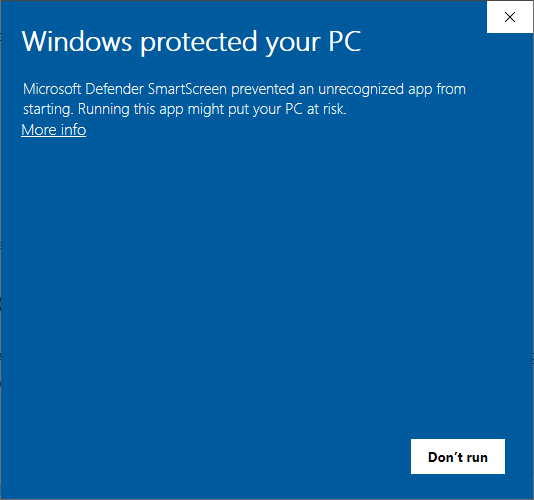
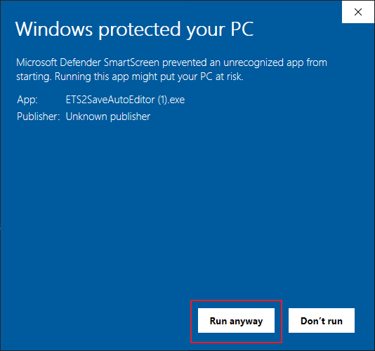
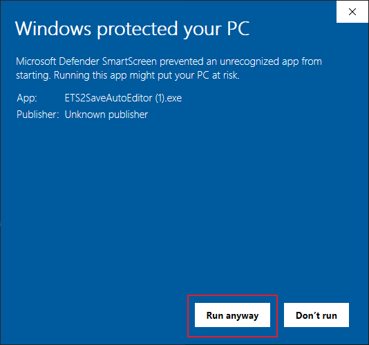

How to use: ETS2 Auto Save Editor
ETS2 Auto Save Editor (ETS2ASE) can simply modify ETS2's save game without requiring high-level knowledge, or share, receive, and apply a paintjob. This program is made of GUI, so anyone can use it easily. But there's something you should know, so I wrote this document to introduce the program in more detail.
Getting Started
Disable Steam cloud save
You must disable Steam cloud save of the profile you want to modify before using the program. If Steam cloud save is enabled, the save file will be stored on the Steam server and cannot be edited within your PC. Here's how to deactivate it.
1. Navigate to Edit Profile screen
2. Disable Steam cloud save
Steam cloud save is disabled after this simple procedure. Remember to disable the Steam cloud save for each profile. If you frequently edit saves and want to do to all other profiles, it's a good idea to make a habit of disabling Steam cloud save when you create a new profile. Now, let's install the program. To use the program, you just need to download and run exe. Just remember to always get the latest version and use it. There was a serious problem with the previous version, so you must get the latest version and use it.
Download and launch ETS2ASE
Installation is simple. First, click the download button below to see the list of program versions. Please install the latest version that appears at the top. Program is provided in Korean and English versions. Download the zip file by referring to the picture below.
When you open the downloaded zip file, you will find one exe file. Extract this program to any location and run it. Don't forget that the program extracts a save file decryptor to the same folder. If you see a warning as shown below when running a program, you can do the following:
 

Press 'More info' and run it.
The first time you run a program, you will be asked if the program should install a decryption program. Click Yes to automatically extract the decryption program to the same folder.
The program window will show up! Congrats! You have successfully installed ETS2ASE! Now let's look at some of the things you can do with this program.
Key Features
The application is simple to use: run. Select a profile. Select Savegame. Select Job. Go!
Let's learn how to use some of the key features. Features that are too easy to use are not dealt with.
Export/Import paintjob
This program can export or import the paintjob of the assigned truck/trailer. As it works based on assigned ones, make sure you assign yourself to the truck/trailer you want to edit. And then run the program again, proceed like the photos below.
If you select Export/Import and then select a file location to export/imporrt, the operation will be done automatically. If you play the game afterwards, you can see how it was applied.